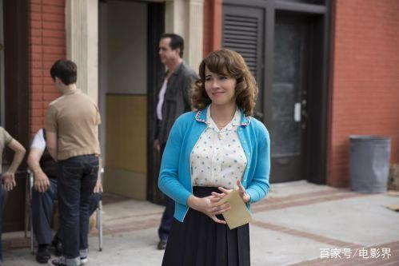

《绿皮书》：18个小细节之下的全新解读
黑人钢琴家上学时是在列宁格勒音乐学院学的古典音乐，三重奏的另外两个成员也是苏联人，而那时候正处在美苏争霸最尖锐的时期。
- 故事的一开始，托尼拿走了罗斯古德的帽子，然后上演了一场贼喊捉贼的把戏。托尼这样做是为了和大佬罗斯古德有亲近的机会，当托尼把帽子还给罗斯古德的时候，果然获得了良好的效果。这样也就为后来罗斯古德给托尼打电话介绍司机的工作埋下了伏笔。
- 托尼拿走罗斯古德的帽子导致罗斯古德发火，也直接导致了会所停业。不过，这不是会所停业的真正原因，而是罗斯古德的发火恰巧赶上了会所想要停业装修的计划。托尼一早就知道会所即将就要停业装修，所以才会有意拿走罗斯古德的帽子，以求在大佬跟前混个脸熟。
- 罗斯古德发火导致会所提前停业装修，会所负责人应该会追查到底是谁偷走了罗斯古德的帽子。照看罗斯古德帽子的女侍应因为收了托尼的钱，所以也不敢揭发托尼。
- 托尼将两位黑人佣工用过的杯子直接扔进了垃圾桶，而她老婆又拿了出来。这个小细节表明了托尼一开始对黑人的态度有些不友好，为后来他态度的转变做了铺垫。也表现出了托尼老婆对黑人的接纳太态度，也为后来她答应黑人钢琴家雇佣托尼做了铺垫。 
- 托尼和胖子大胃王比赛吃汉堡，赢得了50块钱。其实，托尼比赛并没有赢，那50块钱是他去当铺用手表换来的钱。虽然，影片中的剧情是先有托尼比赛吃汉堡，后有当铺当手表。但是，托尼当手表所得50块钱不知所去，所以我们有理由推测托尼比赛并没有赢。
- 在酒吧黑帮老大找托尼做事，托尼婉言拒绝了。这表明托尼有一定的黑帮背景，或者和黑帮成员走的近，再结合托尼会所看场子的职务，这也就是黑人钢琴家雇佣他南下的真正原因。托尼婉言拒绝了黑帮老大，也表明托尼是个原则性的人，是个有自己道德准则的人。
- 托尼在当铺当表的时候，当铺老板和他闲聊了几句，因而还被托尼diss了一句。但是，这个细节也为结尾处当铺老板来托尼家过圣诞埋了伏笔。当铺老板来托尼家过圣诞又为黑人钢琴家最后的到来做了铺垫。这种连环的铺垫体现了创作者的匠心和剧作上的高明。
- 黑人钢琴家放着北方的上层生活不过，却偏偏选择了南下演出。这可能是为了配合当时美国社会上暗流涌动的黑人民权运动。
- 黑人钢琴家南下之前在全城物色合适人选，最终选择了具有黑帮背景的托尼，并且在应聘的时候提出了洗衣服擦鞋的要求。个人认为黑人钢琴家提出这种要求，可能是要考验托尼的人品。托尼直言拒绝了，维护了自己的尊严，也就通过了考验。
- 黑人钢琴家第一次被捕，去的可能不是泳池，而是同性浴室。
- 汽车抛锚，路边修理，黑人钢琴家和正在劳作的黑人同胞对视。这一细节，导演表现的隐忍含蓄，把更多的思考空间留给了观众。个人认为，这是本片最让人震撼的一幕，一下就把全片所有的主旨都浓缩在了这一个镜头里。
- 黑人钢琴家上学时是在列宁格勒音乐学院学的古典音乐，三重奏的另外两个成员也是苏联人，而那时候正处在美苏争霸最尖锐的时期。还有黑人钢琴家的管家是一个印度人，黑人钢琴家可以和任何国家肤色的人相处合作，而那时候的美国白人却接纳不了黑人。